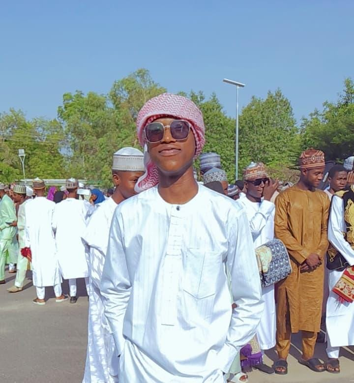
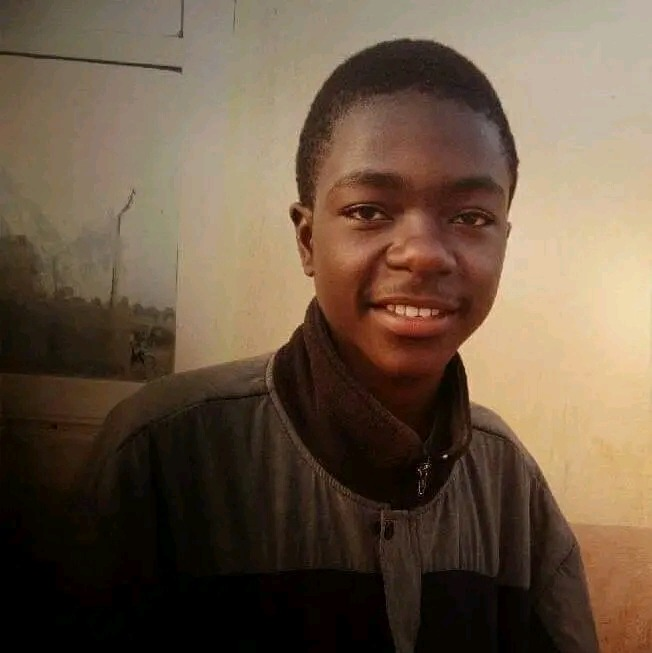
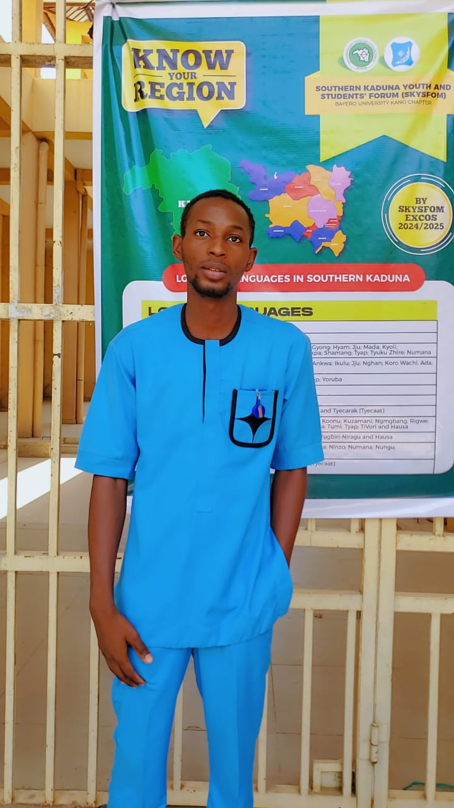
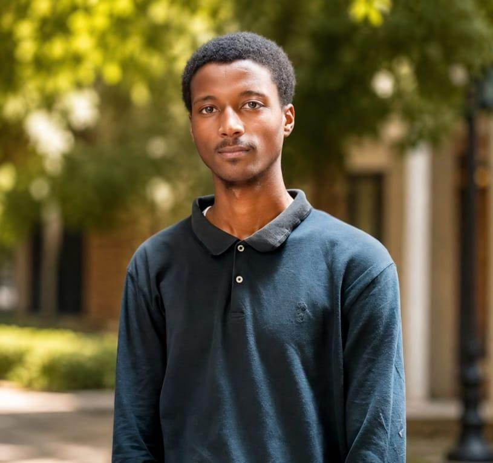
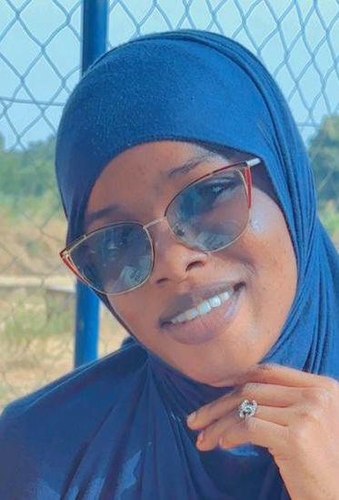
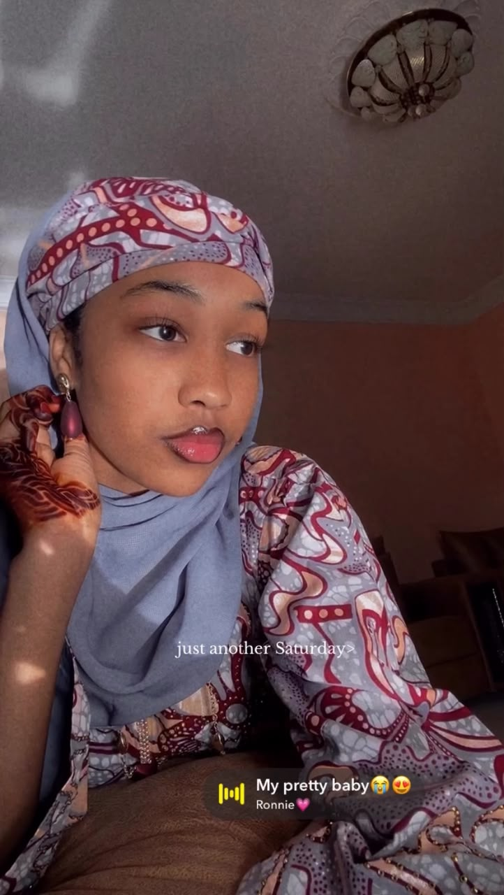
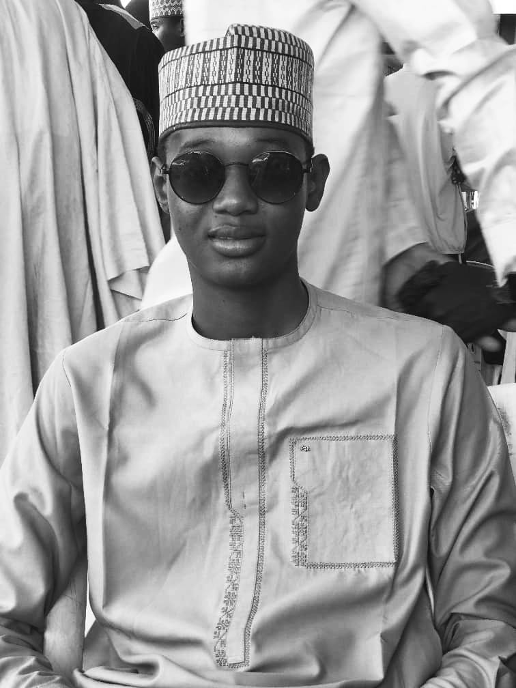
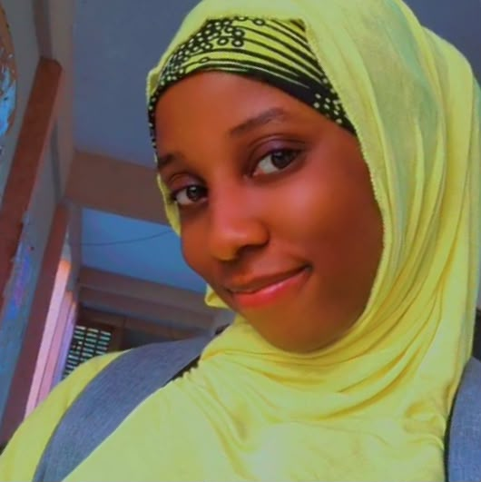
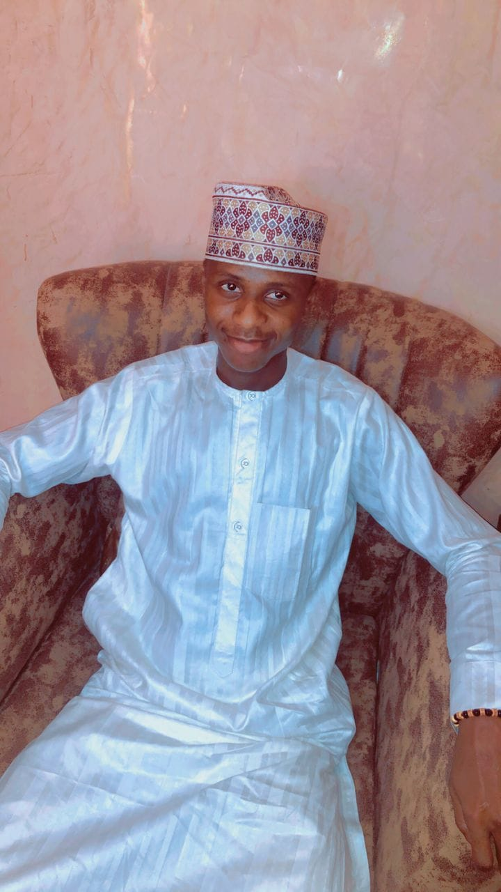

About Our Team
Welcome to our Cooking Hobby website. We are a team of ten students who collaborated to design and develop this website as part of our Web Development course. Our goal is to share our love for cooking while demonstrating our knowledge of HTML and CSS.
Meet Our Team

Muhammed Monsur
Cybersecurity Student
Reg No: CST/24/CBS/00024
Muhammed Monsur is a cybersecurity student with a strong interest in ethical hacking and network security. He enjoys learning new technologies and building practical technical skills.

Mubarak Bashir
Computer Science Student
Reg No: CST/25/COM/00424
Born, raised, and educated in Zaria, Kaduna State. He attended NUBAPoly, where he completed his ND programme. Passionate about technology and continuous learning.

Luka George
Cybersecurity Student
Reg No: CSC/24/CBS/00074
Luka George is from Kaduna State, Nigeria, and is a Cybersecurity student in the Faculty of Computing. He aspires to become an ethical hacker and back-end developer.

Umar Dikko Abubakar
Computer Science Student
Reg No: CST/24/COM/00116
From Kaduna, Nigeria. A student at BUK Kano who loves learning about computers and helping people through technology.

Suleiman Salamatu
Computer Science Student
Reg No: CST/25/COM/00434
Computer Science student at Bayero University Kano. Passionate about technology, problem-solving, and digital innovation. Created the Form page for this project.

Aisha Muktar
Computer Science Student
Reg No: CST/24/COM/00106
University student with a strong interest in technology. Enjoys learning about computer science, web development, programming, and digital technologies. Created the Table page.

Mohammed Mohammed Umar
Computer Science Student
Reg No: CST/24/COM/00104
200-level Computer Science student at BUK from Adamawa State. Passionate about technology, programming, and innovation. Founder of PateSwift Pay.

Maryam Labaran Garba
Computer Science Student
Reg No: CST/24/COM/00076
Student of computer science at Bayero University Kano. Passionate about learning and growing every day. Contributed to the Form page.

Taslim Abdullahi Muhammad
Computer Science Student
Reg No: CSC/24/CBS/00076
Student at Bayero University Kano, originally from Kaduna. Passionate about developing his knowledge and skills in computer technology. Aims to build a successful career.

Member 10
Student
Reg No: [REG NUMBER]
[Brief biography of member 10]